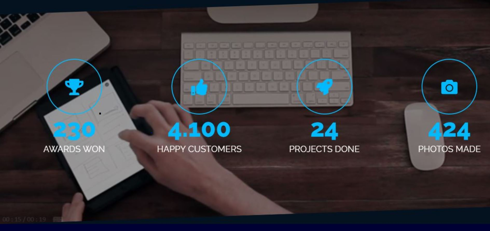
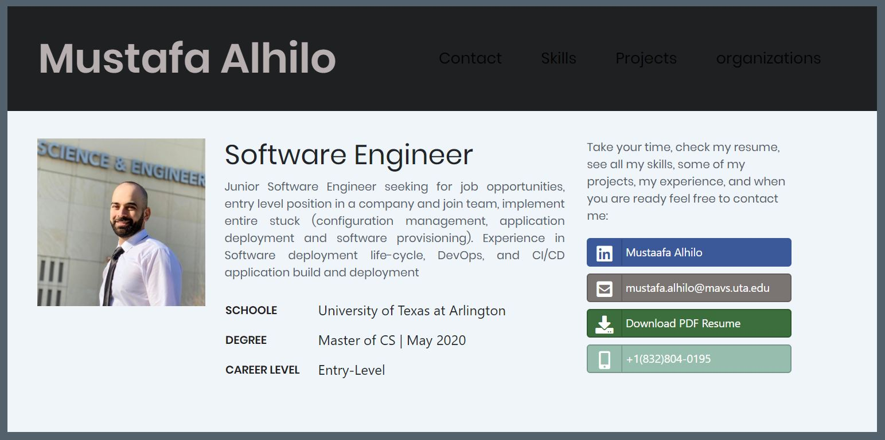

Advance Software Engineering
Scrum and Agile Methodology | Spring 2020
Design and develop an android application using an agile software engineering methodology Scrum. This application developed in an incremental manor using all Agile practices such as pair programming, refactoring, test-first and active client involvement
Scrum methodology used. Each sprint is 2 weeks long
The role played “ScrumMaster”, and another sprint as “developers”
As a "ScrumMaster": manages all the technical details of an increment
As a “Developer”: implementing the required activities including: writing requirements, design & coding, unit testing, writing test cases, integration and testing. worked in pairs at all times.
A scrum master in a team implemented Agile development process to develop android application, Pair programing on the second half of the project, used Ionic framework and firebase as database, implemented sprint review and sprint retrospective meetings
“Daily Standup Meetings, DSM
“Refactoring”: Sufficient time devoted to refactoring (continuous optimization and simplification) and documenting the changes due to refactoring.
Advance Database
Cloud Computing | Spring 2020
Microsoft – Azure- Hight performance computing:
Used Azure App Service for hosting web application. Developed in Python flask and Azure SQL Database
UI Visualized and displayed the user request in the form of charts using Pygal/PyChart. Implemented k means clustering on Titanic dataset based on user specified attributes and display generated clusters as Tables
Deployed traffic modeling systems (JMeter) to assess the performance of the application
Implement Azure Load Balancer to distribut inbound flows that arrive at the load balancer's front end to backend pool instances
If there is a load on the Web App, a Virtual machine scale sets implemented to run more instances or reduce the number of Vertual machines are running
Advance Database
Cloud Computing | Spring 2020
AWS- Scaling Up and Down:
Develped web application with friendly UI
AWS Elastic Beanstalk service for deploying and scaling (up and down) web applications, deployed with Python Flask and select Amazon EC2 instance.
Upload data in RDS, perform CRUD operations, run simple DB queries, and compute the time statistics
Handles the deployment, from capacity provisioning, load balancing, auto-scaling to application health monitoring. Using CPU utilization metrics to trigger Auto Scaling actions
Handle peaks in workload or traffic.Used traffic modelling systems like Apache Jmeter for testing.

Web Data Mangment
Portfolio | Fall 2019
Developed a web application where potential employers can see the projects,work,experience, and skills. The goal of the project was to build entire website
Starting with front-end using HTML, CSS, JavaScript
Back-end and working on the server-side web programming, using PHP and a relational database system. Used Apache Web Server, MySQL Database, XAMPP manager console, and phpMyAdmin
Deployed the website on UTA cloud
Develop the entire project again using Laravill Framework
Click to see the project :

Web Resume
Personal Project
(Simple website), I deployed this project with HTML, CSS, and Bootstrap. It is portfolio that includes my education, experience, projects, and all contact details. It contains all the links to my social media, and the user able to download my pdf resume
Click to see the project :

Take your time, check my resume, see all my skills, some of my projects, my experience, and when you are ready feel free to contact me: